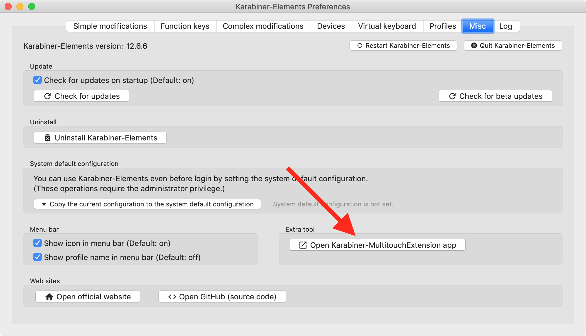

Multitouch Diamond Cursor changes w,a,s,d keys to arrow keys while your finger is on the trackpad.
| Key | When one finger is on the trackpad | When two fingers are on the trackpad |
|---|---|---|
| w | up arrow | page up |
| a | left arrow | home |
| s | down arrow | page down |
| d | right arrow | end |
Multitouch Diamond Cursor requires MultitouchExtension. Please follow this instruction before using Multitouch Diamond Cursor.